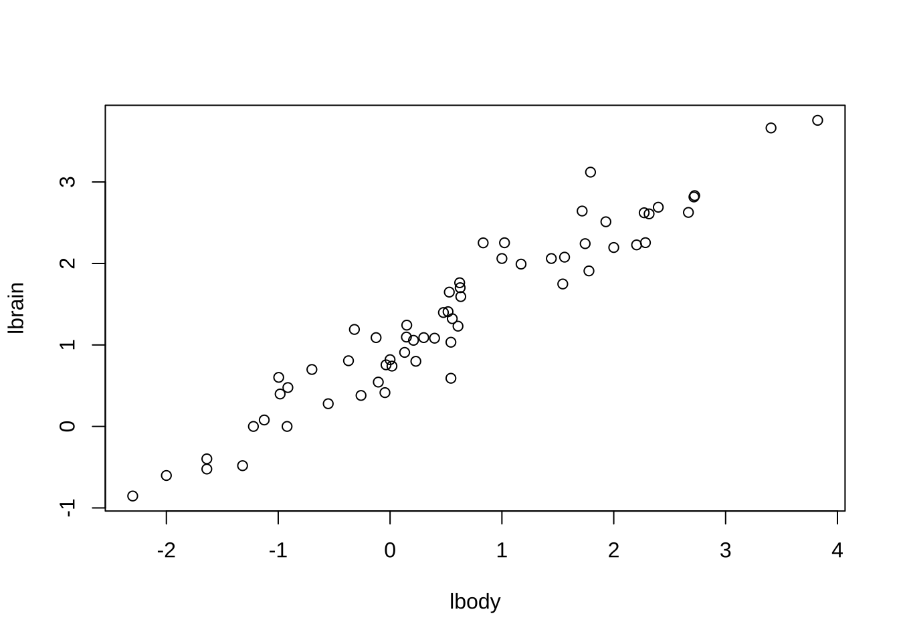

제 1 장 중회귀분석
예제 3.3에 나온 중고차 가격자료를 이용한 R 실습입니다. ##
1.1 중고차 자료
head(usedcars)## price year mileage cc automatic
## 1 790 78 133462 1998 1
## 2 1380 39 33000 2000 1
## 3 270 109 120000 1800 0
## 4 1190 20 69727 1999 1
## 5 590 70 112000 2000 0
## 6 1120 58 39106 1998 11.2 산점도 행렬
pairs(usedcars)
1.3 중회귀 모형의 적합
fit0 <- lm(price ~ year + mileage + cc + automatic, usedcars)계획행렬은 다음과 같이 구할 수 있다.
model.matrix(fit0)## (Intercept) year mileage cc automatic
## 1 1 78 133462 1998 1
## 2 1 39 33000 2000 1
## 3 1 109 120000 1800 0
## 4 1 20 69727 1999 1
## 5 1 70 112000 2000 0
## 6 1 58 39106 1998 1
## 7 1 53 95935 1800 1
## 8 1 68 120000 1800 0
## 9 1 15 20215 1798 1
## 10 1 96 140000 1800 0
## 11 1 63 68924 1998 1
## 12 1 82 90000 2000 0
## 13 1 76 81279 1998 0
## 14 1 17 24070 1798 1
## 15 1 38 40000 2000 0
## 16 1 46 56887 1832 1
## 17 1 95 91216 1997 1
## 18 1 37 48680 1998 1
## 19 1 68 8000 2000 0
## 20 1 41 60634 1835 1
## 21 1 69 114131 1998 1
## 22 1 71 75000 1800 0
## 23 1 99 124417 1998 1
## 24 1 129 130000 1800 0
## 25 1 57 77559 1997 1
## 26 1 107 75216 1838 1
## 27 1 45 52000 2000 0
## 28 1 80 58000 2000 1
## 29 1 113 134500 1800 0
## 30 1 41 80000 2000 0
## attr(,"assign")
## [1] 0 1 2 3 4fit0 에 저장된 결과를 다음과 같이 함수 str을 이용하여 볼 수 있다.
str(fit0)## List of 12
## $ coefficients : Named num [1:5] 525.28696 -5.79964 -0.00226 0.38879 165.31263
## ..- attr(*, "names")= chr [1:5] "(Intercept)" "year" "mileage" "cc" ...
## $ residuals : Named num [1:30] 76.98 212.69 -51.4 -4.01 -53.45 ...
## ..- attr(*, "names")= chr [1:30] "1" "2" "3" "4" ...
## $ effects : Named num [1:30] -4407 -1434 -369 -229 419 ...
## ..- attr(*, "names")= chr [1:30] "(Intercept)" "year" "mileage" "cc" ...
## $ rank : int 5
## $ fitted.values: Named num [1:30] 713 1167 321 1194 643 ...
## ..- attr(*, "names")= chr [1:30] "1" "2" "3" "4" ...
## $ assign : int [1:5] 0 1 2 3 4
## $ qr :List of 5
## ..$ qr : num [1:30, 1:5] -5.477 0.183 0.183 0.183 0.183 ...
## .. ..- attr(*, "dimnames")=List of 2
## .. .. ..$ : chr [1:30] "1" "2" "3" "4" ...
## .. .. ..$ : chr [1:5] "(Intercept)" "year" "mileage" "cc" ...
## .. ..- attr(*, "assign")= int [1:5] 0 1 2 3 4
## ..$ qraux: num [1:5] 1.18 1.18 1.08 1.03 1.26
## ..$ pivot: int [1:5] 1 2 3 4 5
## ..$ tol : num 1e-07
## ..$ rank : int 5
## ..- attr(*, "class")= chr "qr"
## $ df.residual : int 25
## $ xlevels : Named list()
## $ call : language lm(formula = price ~ year + mileage + cc + automatic, data = usedcars)
## $ terms :Classes 'terms', 'formula' language price ~ year + mileage + cc + automatic
## .. ..- attr(*, "variables")= language list(price, year, mileage, cc, automatic)
## .. ..- attr(*, "factors")= int [1:5, 1:4] 0 1 0 0 0 0 0 1 0 0 ...
## .. .. ..- attr(*, "dimnames")=List of 2
## .. .. .. ..$ : chr [1:5] "price" "year" "mileage" "cc" ...
## .. .. .. ..$ : chr [1:4] "year" "mileage" "cc" "automatic"
## .. ..- attr(*, "term.labels")= chr [1:4] "year" "mileage" "cc" "automatic"
## .. ..- attr(*, "order")= int [1:4] 1 1 1 1
## .. ..- attr(*, "intercept")= int 1
## .. ..- attr(*, "response")= int 1
## .. ..- attr(*, ".Environment")=<environment: R_GlobalEnv>
## .. ..- attr(*, "predvars")= language list(price, year, mileage, cc, automatic)
## .. ..- attr(*, "dataClasses")= Named chr [1:5] "numeric" "numeric" "numeric" "numeric" ...
## .. .. ..- attr(*, "names")= chr [1:5] "price" "year" "mileage" "cc" ...
## $ model :'data.frame': 30 obs. of 5 variables:
## ..$ price : int [1:30] 790 1380 270 1190 590 1120 815 450 1290 420 ...
## ..$ year : int [1:30] 78 39 109 20 70 58 53 68 15 96 ...
## ..$ mileage : int [1:30] 133462 33000 120000 69727 112000 39106 95935 120000 20215 140000 ...
## ..$ cc : int [1:30] 1998 2000 1800 1999 2000 1998 1800 1800 1798 1800 ...
## ..$ automatic: int [1:30] 1 1 0 1 0 1 1 0 1 0 ...
## ..- attr(*, "terms")=Classes 'terms', 'formula' language price ~ year + mileage + cc + automatic
## .. .. ..- attr(*, "variables")= language list(price, year, mileage, cc, automatic)
## .. .. ..- attr(*, "factors")= int [1:5, 1:4] 0 1 0 0 0 0 0 1 0 0 ...
## .. .. .. ..- attr(*, "dimnames")=List of 2
## .. .. .. .. ..$ : chr [1:5] "price" "year" "mileage" "cc" ...
## .. .. .. .. ..$ : chr [1:4] "year" "mileage" "cc" "automatic"
## .. .. ..- attr(*, "term.labels")= chr [1:4] "year" "mileage" "cc" "automatic"
## .. .. ..- attr(*, "order")= int [1:4] 1 1 1 1
## .. .. ..- attr(*, "intercept")= int 1
## .. .. ..- attr(*, "response")= int 1
## .. .. ..- attr(*, ".Environment")=<environment: R_GlobalEnv>
## .. .. ..- attr(*, "predvars")= language list(price, year, mileage, cc, automatic)
## .. .. ..- attr(*, "dataClasses")= Named chr [1:5] "numeric" "numeric" "numeric" "numeric" ...
## .. .. .. ..- attr(*, "names")= chr [1:5] "price" "year" "mileage" "cc" ...
## - attr(*, "class")= chr "lm"1.4 회귀계수의 추정과 결정계수
함수 summary 는 각 계수의 추정값과 가설 \(H_0: \beta_i=0\)에 대한 t-검정 결과를 보여준다.
또한 결정계수 \(R^2\)도 구해준다.
summary(fit0)##
## Call:
## lm(formula = price ~ year + mileage + cc + automatic, data = usedcars)
##
## Residuals:
## Min 1Q Median 3Q Max
## -177.35 -63.91 -0.99 70.34 212.69
##
## Coefficients:
## Estimate Std. Error t value Pr(>|t|)
## (Intercept) 5.253e+02 3.998e+02 1.314 0.200823
## year -5.800e+00 9.283e-01 -6.247 1.55e-06 ***
## mileage -2.263e-03 7.211e-04 -3.138 0.004324 **
## cc 3.888e-01 2.022e-01 1.923 0.065958 .
## automatic 1.653e+02 3.986e+01 4.147 0.000339 ***
## ---
## Signif. codes: 0 '***' 0.001 '**' 0.01 '*' 0.05 '.' 0.1 ' ' 1
##
## Residual standard error: 101.1 on 25 degrees of freedom
## Multiple R-squared: 0.9045, Adjusted R-squared: 0.8892
## F-statistic: 59.21 on 4 and 25 DF, p-value: 2.184e-12각 회귀 계수에 대한 신뢰구간은 함수 confint로 구할 수 있다.
confint(fit0)## 2.5 % 97.5 %
## (Intercept) -2.981256e+02 1.348699e+03
## year -7.711605e+00 -3.887669e+00
## mileage -3.748021e-03 -7.776672e-04
## cc -2.763072e-02 8.052054e-01
## automatic 8.322275e+01 2.474025e+02공동 신뢰영역은 패키지 ellipse 에 있는 함수 ellipse를 이용해서 다음과 같이 그릴 수 있다.
plot(ellipse::ellipse(fit0, level = 0.90), type = 'l')
plot(ellipse::ellipse(fit0, which = c('year', 'mileage'), level = 0.90), type = 'l')
points(fit0$coefficients['year'], fit0$coefficients['mileage']) ## 분산분석
## 분산분석
anova(fit0)## Analysis of Variance Table
##
## Response: price
## Df Sum Sq Mean Sq F value Pr(>F)
## year 1 2056608 2056608 201.2036 1.841e-13 ***
## mileage 1 135864 135864 13.2919 0.0012228 **
## cc 1 52409 52409 5.1273 0.0324794 *
## automatic 1 175828 175828 17.2018 0.0003389 ***
## Residuals 25 255538 10222
## ---
## Signif. codes: 0 '***' 0.001 '**' 0.01 '*' 0.05 '.' 0.1 ' ' 11.5 예측값
반응변수에 대한 예측값 \(\hat {\bm y} = \bm X \hat {\bm \beta}\)는 함수 redict를 이용한다.
predict(fit0)## 1 2 3 4 5 6 7 8
## 713.0214 1167.3146 321.4025 1194.0114 643.4485 1042.5270 865.9501 559.1876
## 9 10 11 12 13 14 15 16
## 1256.9013 351.5409 946.0553 623.6355 677.3900 1236.5788 991.9617 1007.3483
## 17 18 19 20 21 22 23 24
## 709.6348 1142.6549 890.3836 1029.0340 808.9611 643.6167 611.6964 182.7813
## 25 26 27 28 29 30
## 960.9247 614.4275 924.2101 872.9584 265.3927 884.0490새로운 자료에 대한 예측값 \(\widehat { E(y|x)}\)은 다음과 같이 데이터프레임을 만들고 예측한다.
nw <- data.frame(year=60, mileage=10000, cc=200, automatic=1)
nw## year mileage cc automatic
## 1 60 10000 200 1predict(fit0, newdata=nw, interval="confidence")## fit lwr upr
## 1 397.7504 -342.6272 1138.128새로운 관측값에 대항 예측은 다음과 같이 한다.
predict(fit0, newdata=nw, interval="prediction")## fit lwr upr
## 1 397.7504 -371.3501 1166.8511.6 잔차 분석
plot(fit0)